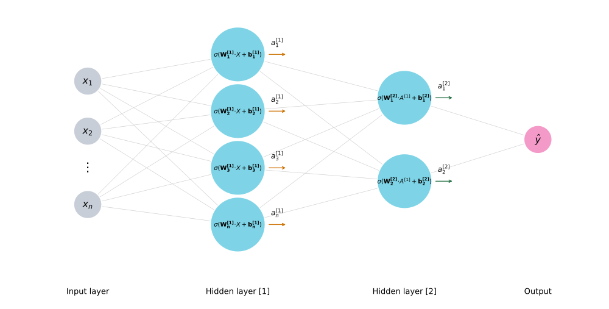
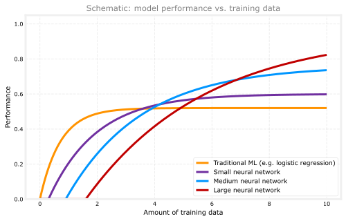
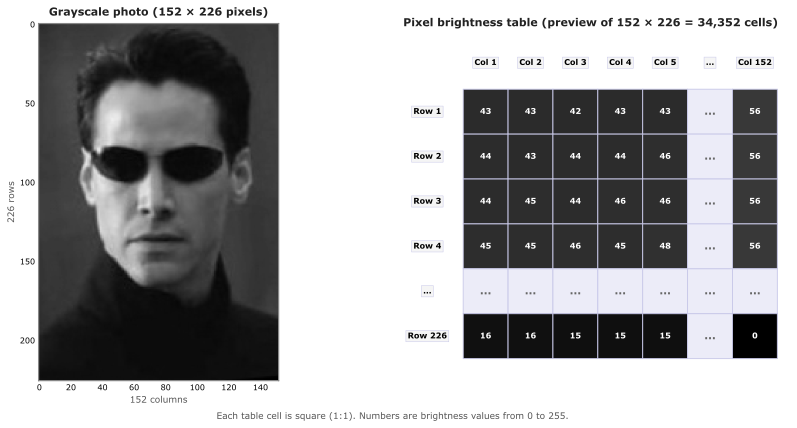

Neural Networks Intuition
machine-learning
neural-networks
Course 2 Week 1 in one page: welcome, biological motivation, demand prediction, layers, activations, multi-layer architecture, and face recognition intuition (formal model math appended here as the course continues).
You have finished Course 1, where you learned linear regression, logistic regression, gradient descent, and regularization. Course 2 goes further. You will meet neural networks (deep learning), decision trees, and advice for building real machine learning systems.
Neural networks are among the most powerful and widely used algorithms in machine learning today. You will implement them step by step, not only read about them.
Review Questions
1. Which course in the specialization covers linear and logistic regression in depth?
TipAnswer
Course 1 (Supervised Machine Learning).
What You Will Learn
In this course you will study two major families of algorithms.
- Neural networks (deep learning), used in speech recognition, computer vision, language models, recommendations, and many other areas.
- Decision trees, another widely used method that does not always get as much media attention as neural networks, but is still very effective in practice.
You will also get practical advice on how to build machine learning systems. That material is somewhat unique to this specialization. When teams build applications in industry, they face choices every week. Should you collect more data? Buy a bigger GPU? Try a more complex model? Good process saves months of work on the wrong path.
Review Questions
1. Name two algorithm families introduced in Course 2.
TipAnswer
Neural networks (deep learning) and decision trees.
Four-Week Roadmap
Here is how the course is organized.
| Week | Focus | Main ideas |
|---|---|---|
| 1 | Neural networks and inference | How a network is structured, forward propagation, making predictions with trained weights |
| 2 | Training neural networks | How to learn parameters \(w\) and \(b\) (and more) from labeled data \((x, y)\) |
| 3 | Practical advice | Debugging models, choosing what to work on next, building systems efficiently |
| 4 | Decision trees | Tree models, ensembles, and when they shine |
Inference means using a network that is already trained to make predictions. If someone posts trained weights on the internet and you download them, running the network on new inputs is inference. Training means finding those weights yourself from a labeled training set.
Review Questions
1. What is the difference between inference and training?
TipAnswer
Inference uses an already-trained model to predict on new inputs. Training learns the model parameters from labeled examples.
1. Which week of Course 2 focuses on decision trees?
TipAnswer
Week 4.
Neurons and the Brain
When neural networks were first invented decades ago, the hope was to write software that could mimic how the biological brain learns. Today artificial neural networks look very different from what neuroscientists understand about real brains, but a loose biological picture still helps with intuition.
Review Questions
1. What was an early motivation for inventing neural networks?
TipAnswer
To build software inspired by how the brain learns and processes information.
Brief History
| Era | What happened |
|---|---|
| 1950s | Early neural network research begins |
| 1980s–early 1990s | Renewed interest; strong results on handwritten digit tasks (postal codes, check amounts) |
| Late 1990s | Enthusiasm fades again for a time |
| ~2005 onward | Resurgence; deep learning becomes the popular name for large neural networks |
Deep learning and neural networks mean almost the same thing in practice. The word deep simply suggests many layers of computation. The branding helped the field grow quickly after 2005.
Since then, neural networks have spread across application after application.
- Speech recognition was an early big win for modern deep learning.
- Computer vision jumped after the ImageNet result around 2012.
- Natural language processing and many other fields followed.
- Today you see neural networks in medical imaging, advertising, recommendations, climate modeling, and more.
Review Questions
1. True or false? Deep learning and neural networks are completely unrelated ideas.
TipAnswer
False. In this course they refer to essentially the same family of models. Deep usually means a network with many layers.
Biological Neuron (Intuition Only)
The biological brain is still the most capable “intelligence” we know. Early neural network research asked whether software could capture even a tiny fraction of that ability.
A biological neuron, in simplified form, has the following parts.
- Inputs (dendrites) receive signals from other neurons.
- The cell body (with the nucleus) combines those signals.
- An output wire (axon) can send a signal to other neurons.
Human thought, at a very high level, comes from billions of neurons passing signals and sometimes forming new connections.
You do not need biology vocabulary to build artificial networks. Dendrites, axons, and nucleus are optional intuition, not exam requirements.
Artificial Neuron Model
An artificial neuron is a much simpler math object.
- It receives one or more numeric inputs.
- It performs a small computation (you will define this precisely on the next pages).
- It outputs a number, which can feed another neuron.
The same layered picture appears in Vector Algebra. Inputs on the left flow through hidden neurons to an output on the right.
Each circle is one neuron. A real network stacks many neurons in parallel and in layers, each taking numbers in and sending numbers out.
This is the same two-step pattern you already saw in logistic regression. In Course 1 you first formed the linear score
\[ z = \vec{w} \cdot \vec{x} + b \]
then passed it through the sigmoid to get the model output
\[ f_{\vec{w},b}(\vec{x}) = g(z) = \frac{1}{1 + e^{-(\vec{w} \cdot \vec{x} + b)}} \]
A single neuron does those same two steps. It forms \(z\) from its inputs, runs the sigmoid, and returns one number. In neural network notation that output is called the activation \(a\). It is the same kind of number you called \(f_{\vec{w},b}(\vec{x})\) in logistic regression, often read as a probability after the sigmoid.
Put many neurons side by side, stack more layers on top, and you have a network.
Review Questions
1. What three steps does a simplified artificial neuron perform?
TipAnswer
Take numeric inputs, run a small computation, produce a numeric output.
Important Caveat
The biological story is motivating, but you should not take it too literally.
Neuroscience still discovers major facts about how the brain works. We know far less than movies sometimes suggest. Trying to copy the brain blindly with the biological knowledge we have today probably will not, by itself, lead to general intelligence.
Modern deep learning researchers mostly use engineering ideas. They design networks that work well on data and hardware, not because they match brain biology.
Even these simplified neurons are enough to build extremely powerful systems. Keep the brain analogy as a story, not a blueprint.
Review Questions
1. Should you treat biological analogies as exact descriptions of modern neural networks?
TipAnswer
No. They are loose intuition. Modern networks are engineered for performance, not faithful brain simulation.
Why Neural Networks Took Off Now
People sometimes ask, “Neural networks are old. Why did they explode only recently?”
Two forces matter most.
- Much more data. The internet, mobile devices, and digitized records gave many applications huge training sets.
- Much faster hardware, especially GPUs (graphics processors), which happen to run the math of neural networks very well.
The plot below is a qualitative sketch of a common teaching picture from this part of the course. It is not a chart of one real benchmark. The axes are schematic. On the horizontal axis is how much training data you have. On the vertical axis is model performance (accuracy or a similar score).
The pattern matches what later scaling studies report. Traditional models often plateau as data grows. Larger models can keep improving when they finally have enough data and compute, though very large models can look weaker on small data sets because they are harder to train well.

Traditional algorithms such as linear regression and logistic regression often improve with more data, but then level off near the bottom of the plot. Feeding ten times more data rarely fixes that plateau.
Neural networks are different once data and compute are large enough. A small network may rise a little above traditional methods, then flatten. A medium network can climb higher. A large network may look weak at first with little data, but when the training set is big enough it can keep rising and finish with the largest gap above traditional ML. That is the main visual takeaway.
Researchers have measured similar trends on real tasks. Hestness et al. (2017) studied how model quality scales with data size on several deep learning workloads. Kaplan et al. (2020) showed predictable power-law gains when model size, data, and compute grow together. Those papers use real experiments. This page keeps that simpler four-curve teaching picture. The same picture returns, with the \(m\) notation for the training set size, in Why is Deep Learning Taking Off? in the deep learning notes.
You need both a large network and enough data (plus compute). A huge network on a tiny data set can still overfit.
Review Questions
1. Why did neural networks become much more practical after about 2005?
TipAnswer
More digital data and faster hardware (especially GPUs) made it possible to train large networks that keep improving as data grows.
1. If you have only a small training set, is the largest possible neural network always the best choice?
TipAnswer
No. Large models need enough data and compute. With little data they may overfit, similar to high-degree polynomials in Course 1.
Demand Prediction Example
Suppose you sell T-shirts and want to predict whether a design will be a top seller (yes or no). Retailers use this kind of model to plan inventory and marketing. If you know a shirt is likely to sell well, you can stock more in advance.
In the simplest version, the only input feature is the price \(x\). The label \(y\) is 1 if the shirt was a top seller and 0 otherwise.
Review Questions
1. In the one-feature example, what does \(x\) represent?
TipAnswer
The price of the T-shirt.
One Neuron Is Logistic Regression
You can fit logistic regression with a sigmoid. The model outputs a number between 0 and 1, which you read as the probability of a top seller.
\[ a = \frac{1}{1 + e^{-(\vec{w} \cdot \vec{x} + b)}} \]
In Course 1 you often wrote the model output as \(f_{\vec{w},b}(\vec{x})\). For neural networks, we use the letter \(a\), which stands for activation, for the output. The name comes from neuroscience. It suggests how strongly a neuron sends a signal to neurons downstream.
One logistic unit is a tiny computer. It takes one or a few numbers in (here, price), runs the formula above, and outputs one number (here, the top-seller probability). That unit is a very simplified picture of a biological neuron, and much simpler than a real brain cell.
Review Questions
1. What does \(a\) stand for in this course’s neural network notation?
TipAnswer
Activation, the output of a neuron (often a probability after a sigmoid).
1. How is one logistic regression unit related to a neuron?
TipAnswer
It is a simplified model of one neuron. Inputs go in, a small computation runs, one activation comes out.
Richer Demand Model
Now use four features for the same prediction task.
| Feature | Meaning |
|---|---|
| \(x_1\) | Price |
| \(x_2\) | Shipping cost |
| \(x_3\) | Marketing spend |
| \(x_4\) | Material quality |
Whether a shirt becomes a top seller may depend on factors shoppers actually care about.
- Affordability (price plus shipping)
- Awareness (how much marketing people saw)
- Perceived quality (price and material can both matter; expensive shirts are sometimes assumed to be higher quality)
You could build three neurons in a hidden group to estimate those ideas, then wire their outputs into one final neuron that predicts top-seller probability.
Intuitively, the first hidden neuron might focus on price and shipping for affordability. The second might lean on marketing for awareness. The third might combine price and material for perceived quality. The output neuron then reads those three activations and predicts top-seller probability.
In real software, you do not hand-wire which inputs each neuron uses. Each neuron in a layer can connect to every value from the previous layer. Training picks which connections matter.
Review Questions
1. Name the three shopper-facing factors in the T-shirt story.
TipAnswer
Affordability, awareness, and perceived quality.
Layers and Activations
A layer is a group of neurons that share the same stage of computation.
| Layer | Role in this example |
|---|---|
| Input layer | The list of features \(x_1, \ldots, x_4\) (not neurons with sigmoids, just the inputs) |
| Hidden layer | Three neurons that output affordability, awareness, and perceived quality activations |
| Output layer | One neuron whose activation is the final top-seller probability |
The output of each neuron is its activation. The three hidden activations feed the output neuron, which produces the final activation \(\hat{y}\).
The network computes in stages.
- Input four numbers \(\vec{x}\).
- Hidden layer maps \(\vec{x}\) to three activations.
- Output layer maps those three numbers to one prediction.
Review Questions
1. Why is the rightmost layer called the output layer?
TipAnswer
Its activation is the final prediction of the network.
Vector View
Pack the four features into a vector \(\vec{x}\). The hidden layer reads \(\vec{x}\) and outputs a vector of three activations. The output layer reads that vector and returns one number.
NoteArrow notation
We write feature and activation vectors with arrows (\(\vec{x}\), \(\vec{a}\)) to match the machine learning vector convention. Python variable names do not include the arrow.
That is the whole pattern. Each layer takes a vector in and outputs a vector (or a single number at the end).
Review Questions
1. What does the hidden layer output in the T-shirt example?
TipAnswer
A vector of three activations (affordability, awareness, perceived quality).
Logistic Regression with Learned Features
Cover the left half of the diagram mentally. What remains is logistic regression on three inputs (affordability, awareness, perceived quality) to predict top-seller probability.
The powerful twist is that the network does not use raw price and shipping directly in that final step. It first builds different features that may be more useful. That is like feature engineering from Course 1, where you combined \(x_1\) and \(x_2\) into \(x_1 \times x_2\) for house prices. Here the network can learn those combinations from data instead of you choosing them by hand.
When you train the network, you do not need to tell it to compute affordability or awareness. It discovers useful hidden features on its own. That learning step is what makes neural networks so flexible.
Review Questions
1. How is a neural network similar to logistic regression?
TipAnswer
The output layer is logistic regression, often on learned features from hidden layers instead of raw inputs.
1. What did you do manually in Course 1 that a hidden layer can learn automatically?
TipAnswer
Feature engineering, such as building new features from existing ones (for example \(x_1 \times x_2\)).
Recognizing Images and Faces
In the demand prediction example, you saw a small neural network read a few numbers (price, shipping, and so on) and predict whether a T-shirt will be a top seller. The same layered idea works for computer vision, including face recognition.
Suppose you are building an app that recognizes faces. You want a network that takes a photo as input and outputs who is in the picture. That is the face recognition problem.
Face Photo as Input
Here is a real example from the LFW People dataset on Kaggle.
To a human, this looks like a portrait. To a computer, it is a grid of pixels.
In a grayscale image, each pixel stores one number, its brightness, usually from 0 (black) to 255 (white). The full image is \(152 \times 226\), which means 152 columns and 226 rows. You can also think of it as a matrix of brightness values with 226 rows and 152 columns.
Pick one pixel and you get one number. For this file:
- The upper-left pixel (row 1, column 1) has brightness 43.
- Move one pixel to the right and you get 43 again.
- The lower-right pixel (row 226, column 152) has brightness 0.
So the computer is not storing a face directly. It stores a large table of brightness numbers.
Pixel-by-Pixel Table
Row 1 is the top row of the photo. Row 2 is just below it, and so on down to row 226. Each row is a list of 152 brightness values.
The figure below puts the photo and a preview of that table side by side. You see the first few rows and columns. The full grid is \(152 \times 226\), so the remaining rows and columns are summarized with …. Each table cell is square (1:1, like a real pixel) and color-coded by brightness.

The top rows are often dark padding around the face (many low numbers). Brighter values show up where the skin, hair, and features are. That is normal for face datasets.
Lecture examples sometimes use a \(1000 \times 1000\) image, which would mean one million pixel values. This photo is smaller, but the idea is identical. More pixels simply means a longer input list.
Unrolling into \(\vec{x}\)
Neural networks want a vector input, not a 2D table. So we unroll the pixel matrix.
Read row 1 left to right, then row 2, then row 3, and keep going. It is like stacking 226 short rows into one long line of numbers.
\[ 152 \times 226 = 34{,}352 \]
So the input vector \(\vec{x}\) has 34,352 entries, one per pixel.
import numpy as np
from PIL import Image
arr = np.array(Image.open("../../../media/keanu-reeves-0007-2.jpg").convert("L"))
h, w = arr.shape
vec = arr.reshape(-1) # row-by-row unroll of every pixel
print("Vector length:", vec.size)
print("First 12 entries (start of row 1):", vec[:12])
print(f"Entries {w - 1}–{w + 1} (end of row 1, start of row 2):", vec[w - 2 : w + 2])
print(f"Last 8 entries (end of row {h}):", vec[-8:])Vector length: 34352
First 12 entries (start of row 1): [43 43 42 43 43 45 47 48 50 51 52 53]
Entries 151–153 (end of row 1, start of row 2): [55 56 44 43]
Last 8 entries (end of row 226): [0 0 0 0 0 0 0 0]Now the learning question is clear. Can you train a network that reads this 34,352-number vector and outputs the identity of the person in the photo?
Review Questions
1. In this grayscale setup, what does one pixel value represent?
TipAnswer
The brightness of that pixel, on a 0–255 scale.
1. How do you turn the full \(152 \times 226\) pixel grid into the input vector \(\vec{x}\)?
TipAnswer
Unroll row by row into one long list. Each of the 34,352 pixels becomes one entry in \(\vec{x}\).
1. How many numbers are in \(\vec{x}\) for this image?
TipAnswer
34,352 (\(152 \times 226\)).
Face Recognition Network
You might build the task like this.
Feed the image vector \(\vec{x}\) into a first hidden layer. Those neurons try to extract useful patterns from the raw pixels. Their outputs go to a second hidden layer, then a third, and finally an output layer that estimates the probability that the face belongs to a particular person (for example, Keanu Reeves).
This is the same layered story as the T-shirt network, but with more hidden layers and a much larger input.
Review Questions
1. What does the output layer predict in this face recognition setup?
TipAnswer
The identity of the person in the image (often as a probability over people).
Receptive Fields Grow Deeper
One helpful detail from neuron visualizations. Early-layer neurons often look at a small window in the image. Deeper neurons effectively look at bigger windows, because they combine signals from many neurons below them.
- Layer 1 sees a small patch (good for tiny edges).
- Layer 2 sees a larger patch (enough to spot an eye or nose corner).
- Layer 3 sees an even larger patch (broader face regions).
So depth is not just “more math.” Deeper layers get more context from the image.
Review Questions
1. How does the image region a neuron “looks at” change in deeper hidden layers?
TipAnswer
The effective window gets larger. Deeper neurons integrate information from wider parts of the image.
Same Architecture, Different Data
Just for fun, imagine training the same kind of network on photos of cars instead of faces. The learning algorithm does not change. Only the data changes.
- Layer 1 still learns edges (quite similar to faces).
- Layer 2 learns car parts (wheels, windows, headlights).
- Layer 3 learns whole-car shapes.
Change the dataset, and the network learns different features for car detection, person recognition, or whatever task you give it. That flexibility is why one architecture can power many vision apps.
Later in this course you will build a network yourself for handwritten digit recognition, another classic vision task.
Review Questions
1. If you keep the same network design but train on car photos instead of faces, what changes?
TipAnswer
The learned features change (car parts and car shapes instead of face parts), because the data and prediction task are different.
Narrow AI and General Intelligence
The word “AI” gets used as if it means one single thing, but it actually covers two quite different ideas, worth knowing the names of even at a high level.
Artificial narrow intelligence (ANI) is an AI system built to do one specific task, sometimes extremely well. Smart speakers, self-driving cars, web search, and the neural networks taught in this course are all examples of ANI. Progress in ANI over the past decade has been genuinely tremendous, and it already creates enormous real-world value.
Artificial general intelligence (AGI) is a much more ambitious idea, an AI system that could do anything a typical human can do, not just one narrow task. AGI does not exist today, and there is no clear, agreed-upon path to building it. Rapid progress in ANI does not automatically mean rapid progress toward AGI, even though the two ideas are easy to confuse.
This connects back to the important caveat from earlier on this page. Today’s artificial neurons are a loose, simplified analogy to biological ones, not an accurate model of how the brain works, so simply building bigger networks of them is not a known path to AGI either. Everything taught in this course falls under ANI. AGI remains a distant, genuinely uncertain goal, one of the most fascinating open problems in the field, but not something this course claims to solve.
Review Questions
1. What is the difference between ANI and AGI?
TipAnswer
ANI (artificial narrow intelligence) is AI built for one specific task. AGI (artificial general intelligence) is the much more ambitious idea of an AI system that could do anything a typical human can do.
1. Does rapid progress in ANI mean AI is also making rapid progress toward AGI?
TipAnswer
Not necessarily. The two ideas are often confused, but fast progress on narrow tasks does not automatically mean progress toward general intelligence.
1. Which category, ANI or AGI, do the neural networks taught in this course fall under?
TipAnswer
ANI. They are powerful tools for specific tasks, not general intelligence.
Neural Network Model
The formal math for layers, parameters, superscript notation \([l]\), and forward pass lives on the next page.
Neural Network Model walks through the T-shirt example equation by equation. Each hidden neuron is a logistic unit, activations stack into vectors, and the output layer produces a probability (with optional 0.5 thresholding).
Review Questions
1. Where is the layer-by-layer math for the T-shirt network?
TipAnswer
What Comes Next
Continue to Neural Network Model, then inference and forward propagation in TensorFlow and NumPy on the course map.
Review Questions
1. What follows intuition on the course map?
TipAnswer
Formal network math, then forward propagation in code.